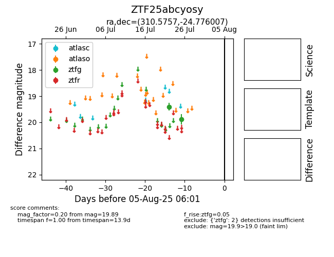

Target ZTF25abcyosy at 2025-08-05 06:01, see:
FINK: fink-portal.org/ZTF25abcyosy
Lasair: lasair-ztf.lsst.ac.uk/objects/ZTF25abcyosy
ALeRCE: alerce.online/object/ZTF25abcyosy
alt names
ZTF25abcyosy (ztf,fink)
coordinates:
equatorial (ra, dec) = (310.5757,-24.77601)
galactic (l, b) = (20.2810,-34.53547)
photometry
last ztfg=19.89
2 ztfg detections
